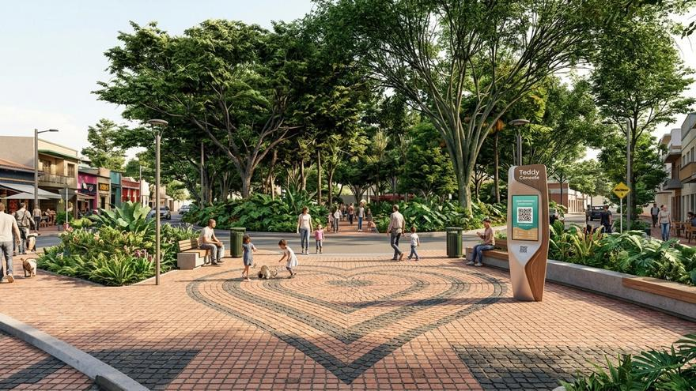
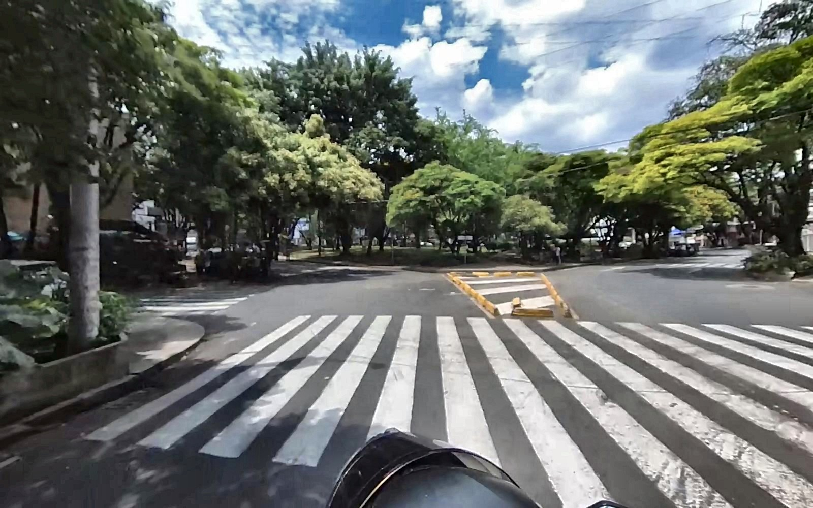
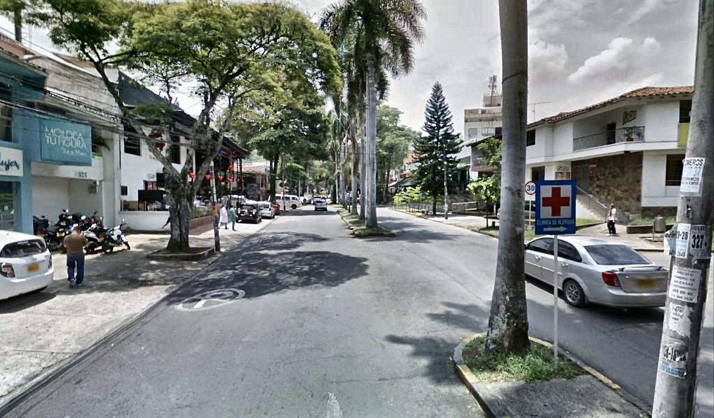
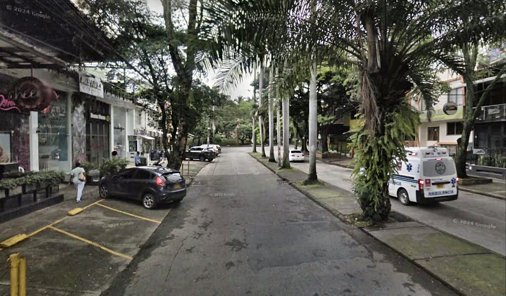
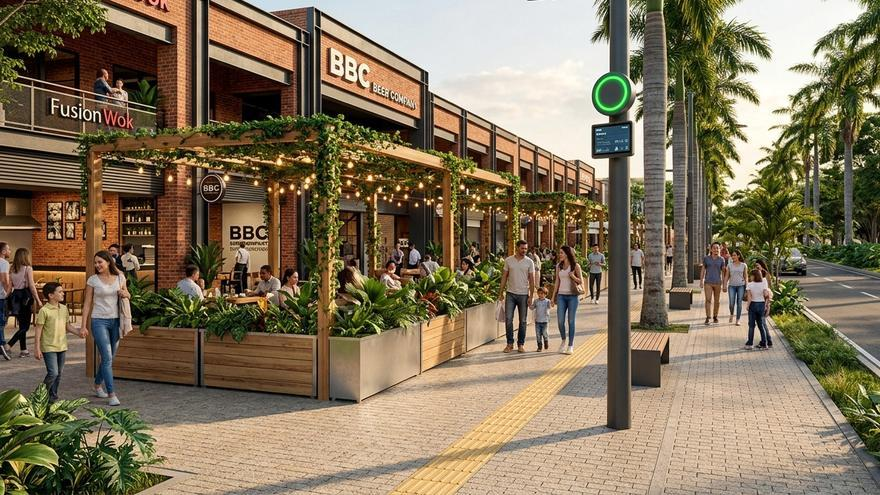
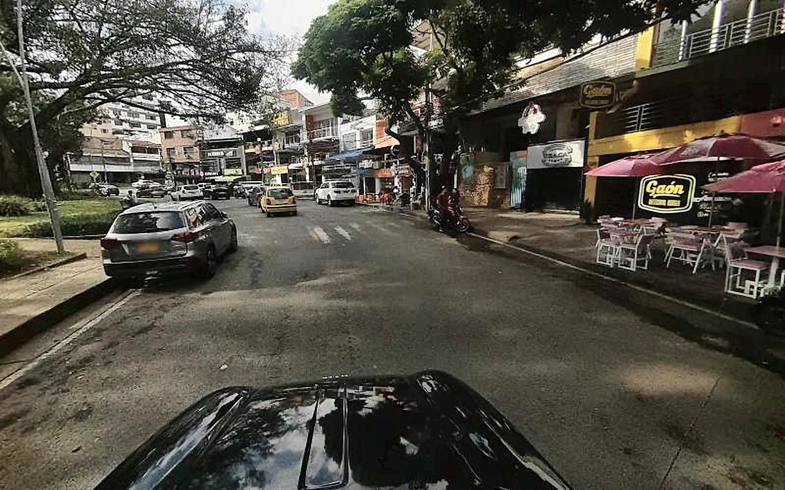
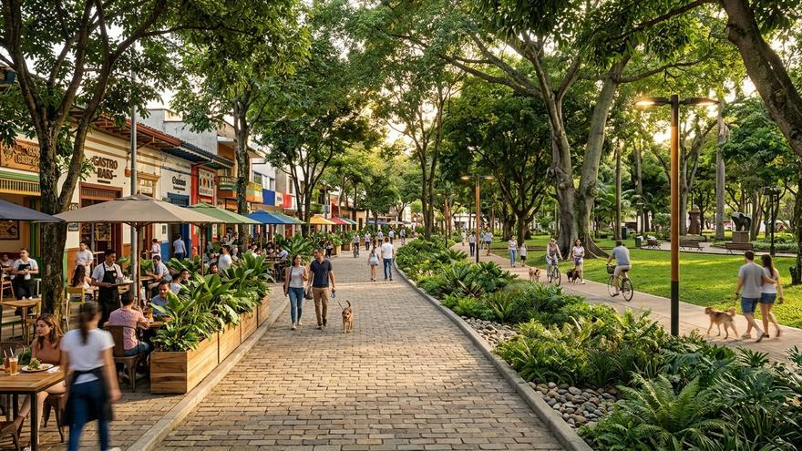

Peatonalización parcial
Piso a un solo nivel en la Carrera 34 y el anillo, con un carril de servicio compartido a 10 km/h para residentes, emergencias y carga en horario fijo.
Propuesta de urbanismo sostenible · Universidad Icesi
De zona de paso a espacio de encuentro: un lugar para caminar, encontrarse, emprender y convivir con la naturaleza en una misma experiencia urbana.


HoyPropuestaMaqueta interactiva
Del trazado real de San Fernando a la propuesta. Dale play al recorrido, cambia entre hoy y propuesta, activa las capas y toca los íconos blancos para ver cada sistema.
Diagnóstico del sector
El Parque del Perro es un nodo urbano, gastronómico y cultural activo de día y de noche en el suroccidente de Cali. Se llega por la Carrera 34, la Calle 3 y la conexión con la Calle 5.

El Parque del Perro concentra actividad comercial, gastronómica, peatonal y vehicular en un mismo espacio, generando conflictos en el uso del espacio público y desaprovechando su potencial ambiental, social y económico.Planteamiento del problema
Antecedentes verificados
La peatonalización de la Carrera 34 ya se probó. Sin gestión ni infraestructura fija, el espacio se deterioró. Por eso la propuesta une diseño, reglas y una mesa de gobernanza.
La Alcaldía propone transformar el sector en una zona con más espacio peatonal para favorecer la economía y la movilidad.
Fuente: Alcaldía de CaliSe peatonaliza la segunda calzada de la Carrera 34 con materas, bajo una licencia temporal a una asociación de restaurantes. Residentes y conductores del barrio la rechazan.
Fuente: OccidenteLa Alcaldía reevalúa la medida: el tramo terminó como parqueo de motos, sitio de reciclaje y con materas deterioradas. La califica como una estrategia fallida.
Fuente: Alcaldía de CaliLa Calle 3 Oeste entre carreras 35 y 34 cambia de sentido (sur a norte) para mejorar la fluidez y la seguridad peatonal en la zona comercial.
Fuente: Alcaldía de CaliBorondo: con un cierre vial temporal, 55 emprendimientos y cerca de 60 restaurantes ocupan el espacio público para reactivar la economía del sector.
Fuente: Alcaldía de CaliPropuesta de intervención
Un modelo integral con reorganización física, ecológica, económica y normativa. Cada componente se puede ver en la maqueta 3D.


Piso a un solo nivel en la Carrera 34 y el anillo, con un carril de servicio compartido a 10 km/h para residentes, emergencias y carga en horario fijo.
Parque en cuatro lóbulos, eje verde, jardines de lluvia y especies nativas.
Terrazas demarcadas, franja libre junto a fachadas y licencias por metro de frente.
Islas de tres colores, recolección diferenciada y compostaje de orgánicos.
Bancas, sombra, luminarias peatonales, luces colgantes y juegos.
Bolardos retráctiles, carga de 5 a 9 a.m., acceso de residentes y emergencias.
Tótem de Teddy con QR, mesa de gobernanza y evaluación abierta.
Ordenamiento espacial
No se elimina el tránsito: se reorganiza priorizando al peatón. Pasa el cursor o toca una zona para resaltarla en la maqueta. La zonificación es compatible con el POT de Santiago de Cali (Acuerdo 0373 de 2014).
Sistemas construidos en el modelo
Cada sistema está construido en la maqueta con su referente técnico. El color de cada tarjeta es el mismo de su capa en el menú Capas del 3D.
Cruces elevados en cada bocacalle, franja táctil, bolardos retráctiles y señal de prioridad peatonal a 10 km/h. Por el carril de servicio pasan residentes, emergencias y carga de 5 a 9 a.m.
Referente: calle de prioridad peatón, Buenos AiresDiez puntos con tres buzones (blanco, negro y verde) sobre tanques bajo el piso de 3.200 a 6.400 L. Se vacían con un camión con elevador, así que no quedan bolsas en la calle.
Referente: contenedores soterrados, BogotáFranjas hundidas con piedra de río y rejillas que llevan el agua del adoquín al jardín. La lámina queda por debajo del nivel del piso y el agua se infiltra en el suelo.
Referente: bioretention swale, NACTOFlores nativas, hotel de insectos, meliponario, casas de aves, colibríes y mariposas, más el compostaje que convierte los orgánicos en abono.
Referente: DAGMA, Corazón de PanceComponente ambiental
Más allá de lo ornamental: infraestructura ecológica funcional. El agua lluvia se infiltra donde cae en lugar de correr al alcantarillado.
| Especie | Función en el proyecto |
|---|---|
| Guayacán rosado Tabebuia rosea | Sombra, floración y alimento para polinizadores |
| Guayacán amarillo Handroanthus chrysanthus | Floración e identidad del paisaje |
| Samán Samanea saman | Gran sombra sobre plazas y terrazas |
| Chiminango Pithecellobium dulce | Árbol nativo resistente para borde de calle |
| Heliconias Heliconia spp. | Néctar para colibríes en jardines de lluvia |
| Palma real Roystonea regia | Ejemplares existentes del separador que se conservan |
Cali tiene 382.655 árboles de 473 especies (DAGMA, abril de 2026). Florecen más de 17.000 guayacanes: más de 10.000 rosados y 2.400 amarillos (septiembre de 2025).
Interdisciplinariedad
La biología define qué se siembra y cómo se mide; las finanzas muestran si se puede mantener; la ciencia política organiza quién decide; la ingeniería de sistemas pone los datos y la maqueta digital, y la economía mide qué gana el barrio.
Se priorizan especies nativas urbanas.
Plantas funcionales para los polinizadores locales.
El eje verde de la Carrera 34 conecta el núcleo del parque con el arbolado del barrio.
Indicadores ecológicos con seguimiento continuo.
| Indicador | Cómo se mide | Meta del proyecto |
|---|---|---|
| Especies vegetales | Inventario en parcelas (DAGMA) | Línea base en campo, luego +30 % |
| Cobertura vegetal | Imagen satelital y dosel medido en sitio | Medir antes y después |
| Especies nativas | % del inventario | Mayoría nativa en siembras nuevas |
| Polinizadores | Transectos mensuales (abejas, mariposas, colibríes) | Aumento sostenido |
| Superficie permeable | m² de jardín de lluvia y piso drenante | Calcular sobre los planos finales |
Las metas son propuestas del equipo. La línea base se levanta en campo, porque el documento original deja estos datos por completar.
Los supuestos son editables y no son cifras oficiales. Reemplázalos con el presupuesto real.
Regulación: reglas de uso y horarios de carga y descarga.
Gestión operativa: coordinación comercial y mantenimiento.
Control ciudadano: mediación de conflictos y evaluación.
La maqueta 3D de esta página reconstruye las calles y los edificios desde OpenStreetMap y sirve para discutir la propuesta antes de construir.
Conteo peatonal en los accesos, calidad del aire y humedad del suelo para regar los jardines solo cuando hace falta.
Cada punto del bulevar enlaza a su ficha: especies sembradas, horarios de carga y descarga y canal para reportar daños.
Un tablero público con los indicadores del parque, para que la mesa de gobernanza y los vecinos decidan con la misma información.
| Sistema | Qué hace | Dato que produce |
|---|---|---|
| Conteo peatonal | Cámaras de conteo anónimo o sensores infrarrojos en los cruces | Personas por hora y por día |
| Riego inteligente | Sondas de humedad conectadas a válvulas por zona | Litros de agua por m² de jardín |
| Ventanas de carga | Reserva en línea del horario de cargue para los locales | Vehículos de carga por franja |
| Reportes ciudadanos | Formulario desde el QR del tótem | Daños abiertos y tiempo de respuesta |
| Tablero público | Página web con los indicadores de todas las disciplinas | Seguimiento mensual del proyecto |
Es la capa digital propuesta. Ningún sistema está instalado hoy; los datos se recogen sin identificar a las personas.
Más gente caminando significa más ventas para los restaurantes y tiendas del parque, que hoy compiten con el tráfico por el espacio.
Un parque activo las 24 horas amplía el horario de los negocios y genera empleo en servicios, seguridad y mantenimiento.
El parque beneficia a todos aunque no todos paguen. Por eso los aportes de los locales y las alianzas público-privadas se reglamentan.
La inversión se compara con lo que gana la ciudad: salud por caminar, menos ruido y contaminación y más valor del suelo.
| Indicador | Cómo se mide | Qué se espera |
|---|---|---|
| Ventas del comercio | Encuesta a los locales antes y después de la obra | Aumento en las franjas peatonales |
| Ocupación de locales | Locales activos sobre locales disponibles | Menos locales vacíos |
| Empleo | Puestos directos en el perímetro del parque | Más empleo formal en servicios |
| Valor del suelo | Avalúos y precio del m² comercial | Valorización, con vigilancia del desplazamiento de vecinos |
| Visitantes | Conteo peatonal de la capa digital | Más visitas fuera de los eventos |
Son indicadores propuestos, sin cifras oficiales todavía. La línea base se levanta con los comerciantes antes de la obra.
Evolución del modelo urbano
La transformación avanza por etapas, y cada una se evalúa antes de pasar a la siguiente. Toca una etapa para ver qué ocurre en ella.


Valor integral de la propuesta
Los beneficios se cruzan: el verde que baja la temperatura también atrae visitantes, y las reglas claras protegen tanto al comercio como a los vecinos.
No se trata de cerrar calles. Se trata de abrir espacio para las personas.
Parque del Perro 24/7 · Volver al CorazónReferencias
Cada dato de la página viene de una fuente pública. Las cifras del simulador son supuestos del equipo.